Paint width
18 Nov. Three base brush widths, judged by sound and by sight together. Under your rule the picture is true to the sound: the look and the map Scan reads are the same strokes, in the same places and at the same widths. So a wider brush is wider for the sound too. Neighbouring notes then share more paint, and a note’s tone takes on its register.
Your choice, 19 Nov: Medium (2×) is the default. It reads as a brush rather than a wire, and each register keeps its own paint: in the two melodies a note’s ring shares about a fifth of its paint with the ring a fifth away (0.22), against 0.06 today and about half wide.
Motion now grows with the width. Its full scale is today’s times the base width, since the paint a stroke lays per length grows with its width. Measured over the four phrases, medium’s Motion medians come back to today’s: the pad 0.38 against 0.38, Crossed hands 0.15 against 0.15, the run 0.68 against 0.68 and the chords 0.56 against 0.52. Before the change medium read 0.75, 0.28, 0.94 and 1.00, and wide pinned at full on three phrases. Wide now reads 0.56 to 0.75.
What else changed: the beads
The beads were not the frame rate. The core lays its strokes sixty times a second of audio time, 1.2 to 1.9 px apart on the 768 canvas, against a brush 13 px across. The look painted from the same strokes at 60 and at 4 frames a second is the same picture (below). They came from the brushwork. Each note was a brush of its own, so a run of short notes was a row of dabs, each with a wide head where a hard strike jumped the width up for 60 ms.
Now a melody is one stroke when the sound joins it (your rule, 19 Nov). A hand’s next note struck alone takes up the last note’s brush when that note still sounds at the strike, or when the sustain pedal is down. The brush is dipped again, and glides to the new pitch over 40 ms. A chord’s notes stay strokes of their own. A strike presses the brush as the study’s did, rising and falling smoothly.
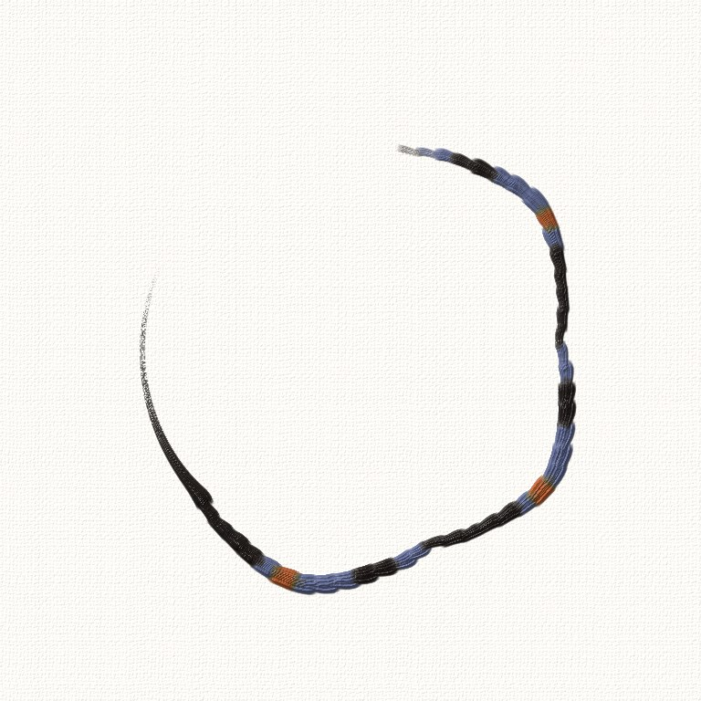
Joined or separate, heard
The rule. A note struck alone goes on with the last note’s stroke when that note’s own amp envelope, as the instrument plays it, is still above −24 dB of the peak it reached. That holds whether its key is down or it is in its release. A note also joins whenever the sustain pedal is down. The core decides, so the map and the look agree. Separate below is step 2’s rule, where every note is a stroke of its own.
Why −24 dB. It sits in the middle of the range you gave. The sounds fall far apart at the next strike, so the line can be anywhere in that range without changing any of these renders. At a note a second the pad’s last note is at about −3 dB, the Tine piano’s at about −14 dB, and the pluck’s is silent. Even three seconds apart a pad note is at −6 dB, and joins. A Tine piano note is at −18 dB two seconds on, joining, and at −23 dB three seconds on, right at the line. At −20 dB the Tine piano’s slow melodies would break a second sooner; at −30 dB a fading note would hold its stroke for longer than you hear it in a texture.
The pluck under the pedal is one stroke, but you still see marks. The pedal joins the stroke: one brush, carrying its colour on. The pluck still dies to silence within a quarter second with the pedal down, though, and a brush lays no paint where there is no sound. So the picture is nine marks of one stroke, true to what you hear. Keeping the brush on the canvas while the pedal is down, laying paint through the silence, is the pedal’s item in step 3 (the controllers on the brush). It isn’t made here.
Fast run, Tine piano
Nine notes a second: each note still sounding at the next strike, so it joins. 1 strokes joined against 43 separate.
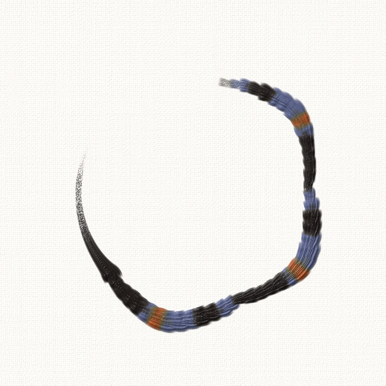
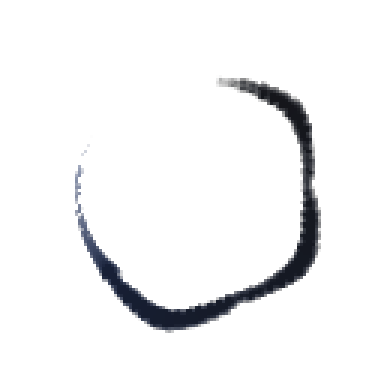
| Centroid | 2.66 (1.63–3.49) |
|---|---|
| Movement | 0.0047 |
| Shared, a semitone | 0.84 |
| Shared, a fifth | 0.22 |
| Glow / Motion / Memory | 0.55 / 0.68 / 0.00 |
| Covered (p90) | 6% |
| Brush, median | 6.0 cells |
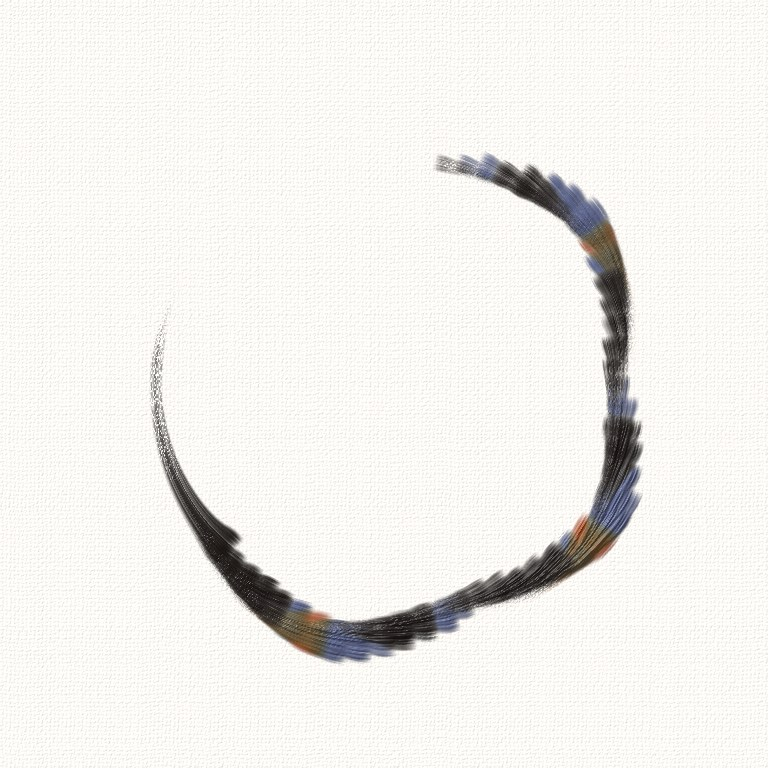
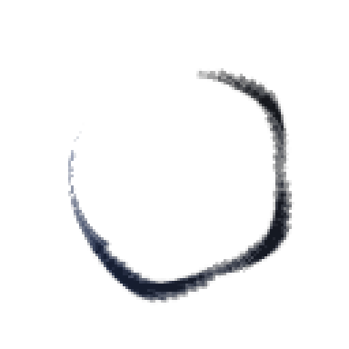
| Centroid | 2.77 (1.79–3.50) |
|---|---|
| Movement | 0.0048 |
| Shared, a semitone | 0.83 |
| Shared, a fifth | 0.19 |
| Glow / Motion / Memory | 0.53 / 0.53 / 0.23 |
| Covered (p90) | 6% |
| Brush, median | 4.1 cells |
Slow melody, Tine piano
A note a second, held 0.95 s each: C E G C B G E D C. Each note is about -14 dB of its peak at the next strike, above the floor, so it joins. 1 strokes joined against 9 separate.
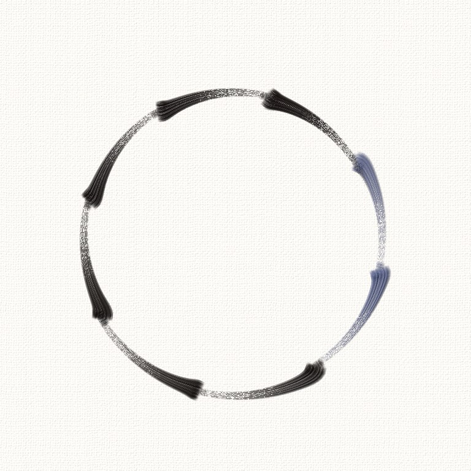
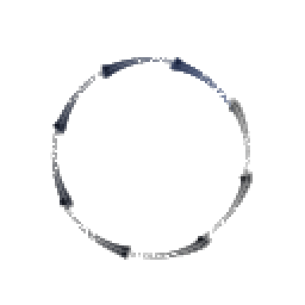
| Centroid | 2.93 (2.42–3.59) |
|---|---|
| Movement | 0.0040 |
| Shared, a semitone | 0.78 |
| Shared, a fifth | 0.12 |
| Glow / Motion / Memory | 0.29 / 0.23 / 0.00 |
| Covered (p90) | 4% |
| Brush, median | 4.5 cells |
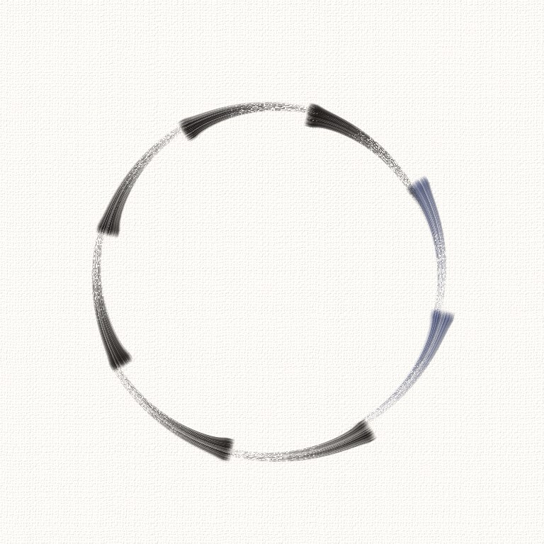
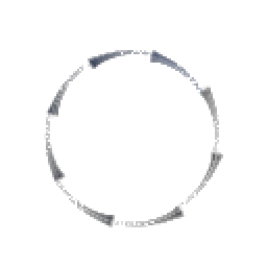
| Centroid | 2.98 (2.42–3.73) |
|---|---|
| Movement | 0.0043 |
| Shared, a semitone | 0.78 |
| Shared, a fifth | 0.12 |
| Glow / Motion / Memory | 0.23 / 0.13 / 0.01 |
| Covered (p90) | 3% |
| Brush, median | 4.1 cells |
Slow melody, Slow pad
The same melody on a long pad: each note at about -3 dB at the next strike. It joins. 1 strokes joined against 9 separate.
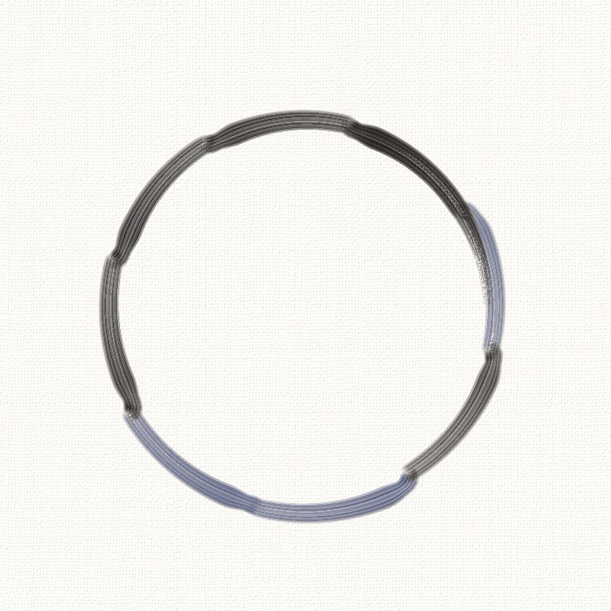
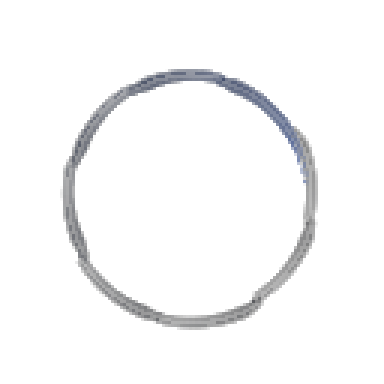
| Centroid | 1.75 (1.23–2.44) |
|---|---|
| Movement | 0.0040 |
| Shared, a semitone | 0.81 |
| Shared, a fifth | 0.14 |
| Glow / Motion / Memory | 0.32 / 0.14 / 0.00 |
| Covered (p90) | 6% |
| Brush, median | 5.9 cells |
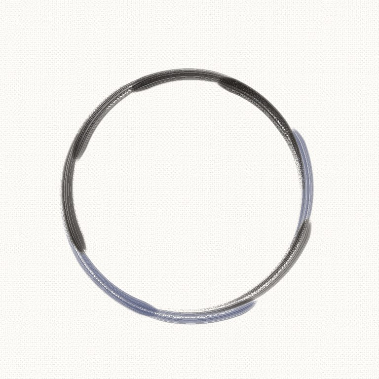
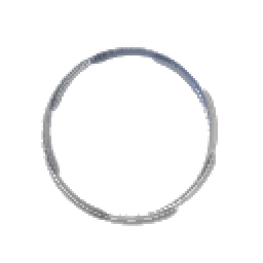
| Centroid | 1.83 (1.31–2.45) |
|---|---|
| Movement | 0.0041 |
| Shared, a semitone | 0.80 |
| Shared, a fifth | 0.16 |
| Glow / Motion / Memory | 0.32 / 0.14 / 0.12 |
| Covered (p90) | 6% |
| Brush, median | 4.8 cells |
Slow melody, a short pluck
The same melody on Tine piano's settings with the decay cut to a quarter second: each note silent long before the next. It does not join. 9 strokes joined against 9 separate.
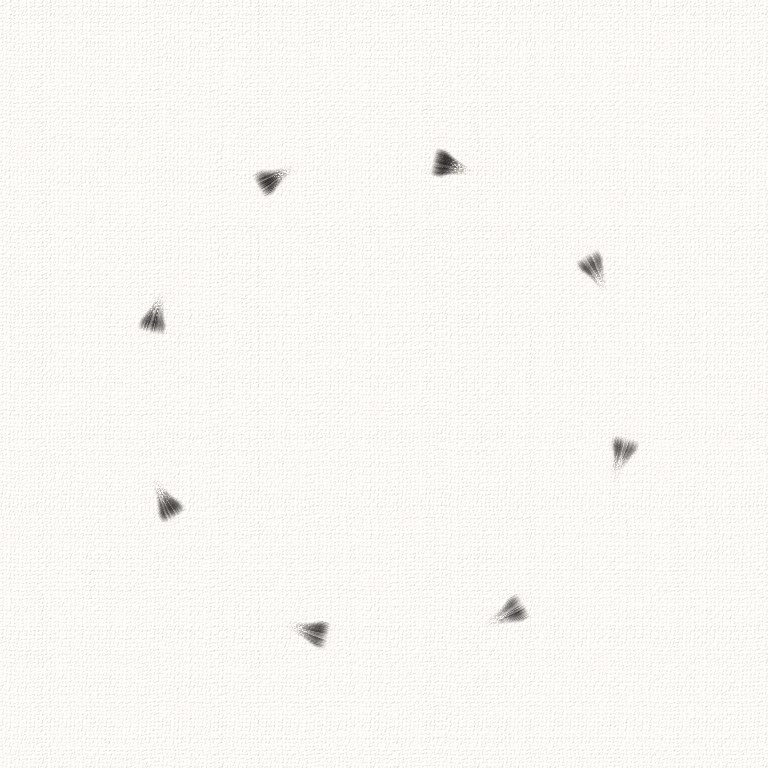
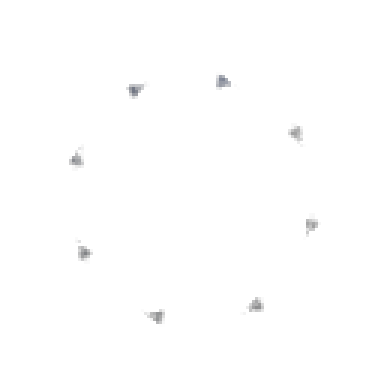
| Centroid | 4.34 (3.84–4.93) |
|---|---|
| Movement | 0.0003 |
| Shared, a semitone | 0.78 |
| Shared, a fifth | 0.10 |
| Glow / Motion / Memory | 0.01 / 0.03 / 0.00 |
| Covered (p90) | 0% |
| Brush, median | 3.9 cells |


| Centroid | 4.34 (3.84–4.93) |
|---|---|
| Movement | 0.0003 |
| Shared, a semitone | 0.78 |
| Shared, a fifth | 0.10 |
| Glow / Motion / Memory | 0.01 / 0.03 / 0.00 |
| Covered (p90) | 0% |
| Brush, median | 3.9 cells |
Slow melody, the pluck under the sustain pedal
The pedal down throughout. It joins. 1 strokes joined against 6 separate.
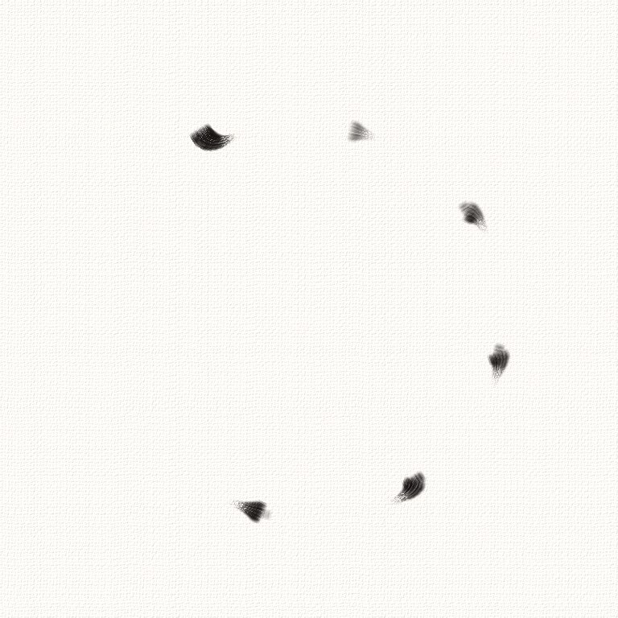
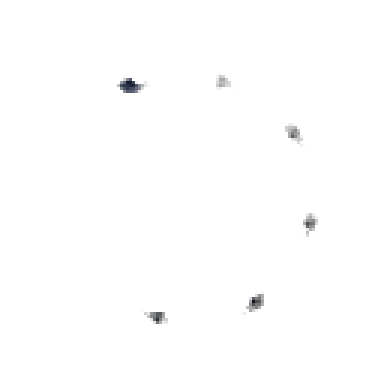
| Centroid | 4.24 (3.71–4.73) |
|---|---|
| Movement | 0.0001 |
| Shared, a semitone | 0.75 |
| Shared, a fifth | 0.07 |
| Glow / Motion / Memory | 0.04 / 0.06 / 0.00 |
| Covered (p90) | 1% |
| Brush, median | 3.9 cells |
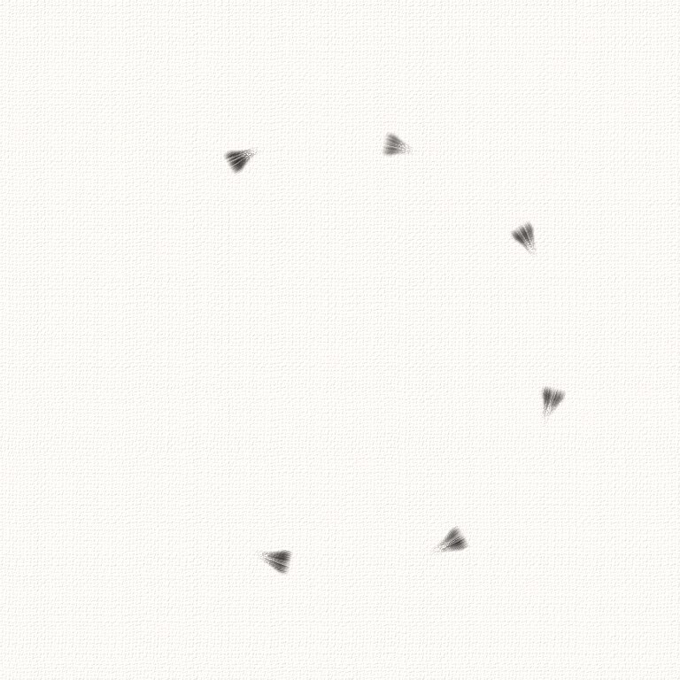
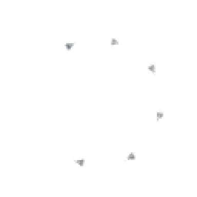
| Centroid | 4.35 (3.73–4.56) |
|---|---|
| Movement | 0.0001 |
| Shared, a semitone | 0.79 |
| Shared, a fifth | 0.09 |
| Glow / Motion / Memory | 0.00 / 0.02 / 0.00 |
| Covered (p90) | 0% |
| Brush, median | 3.9 cells |
The look
The look now uses the core’s brush footprint exactly, cell for cell. Before, it drew the tip shorter, which laid about half the paint per length and made the strokes faint wires. Within that footprint it is finer than the map and is the look only. Each of the core’s eight bristle groups is drawn as four bristles, loaded unevenly, which makes the streaks. The outer bristles are ragged. Wet paint a brush crosses is ploughed into a bank past its flank, and the map holds that bank too. A dry brush catches on the weave, wet paint glistens, and the raking light raises the ridges. The images are the page’s own paint view, rendered in headless Chromium’s software WebGL 2. It was fed the core’s strokes a sixtieth of a second at a time, as the live face is served them, so the pacing is the instrument’s.
How to read the numbers
Centroid is the brightness of what Scan reads, in harmonics: 1 is a sine, about 2 is mellow and 3 is reedy. Movement is how much it changes a sixtieth of a second to the next; under 0.005 is a steady tone. Shared is how much paint a note’s ring has in common with the ring a semitone or a fifth away (the sum of the smaller over the sum of the larger, so 1 is the same paint and 0 is none). It is the median over every note played and every moment its ring had paint. Each ring reads a cell and a half across, about three semitones, so even today’s neighbours a semitone apart share most of their paint. The fifth is where the widths differ. Covered is the share of the canvas with paint; past 35% the painting counts as running away. The map pictures show thickness in grey and wet paint in blue.
Held pad
Slow pad, Picture amount 100: C3 G3 D4 E4 B4 held 9 s, past one turn.
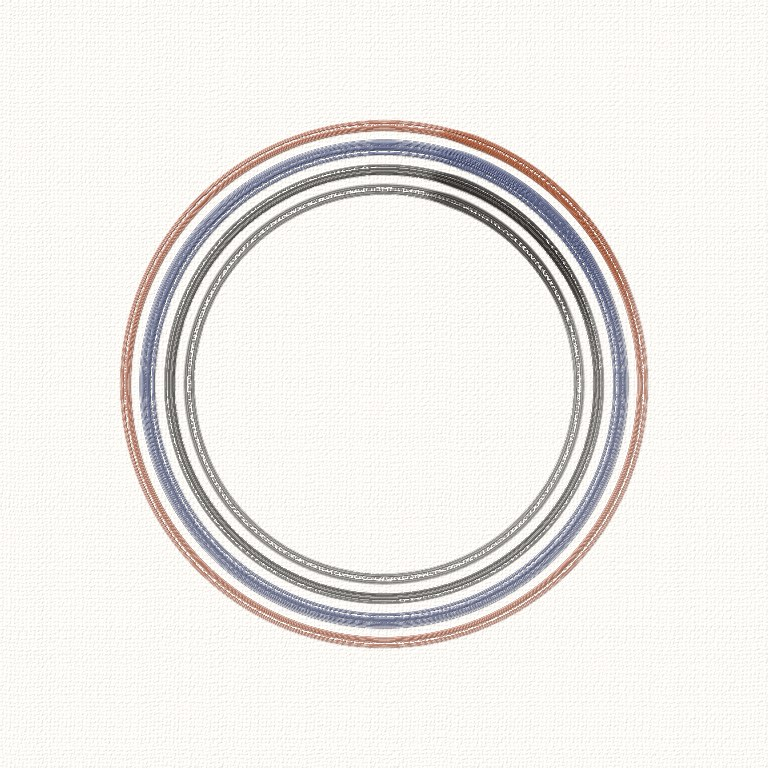
| Centroid | 1.77 (1.47–3.15) |
|---|---|
| Movement | 0.0050 |
| Shared, a semitone | 0.89 |
| Shared, a fifth | 0.61 |
| Glow / Motion / Memory | 0.35 / 0.38 / 0.10 |
| Covered (p90) | 9% |
| Brush, median | 2.9 cells |
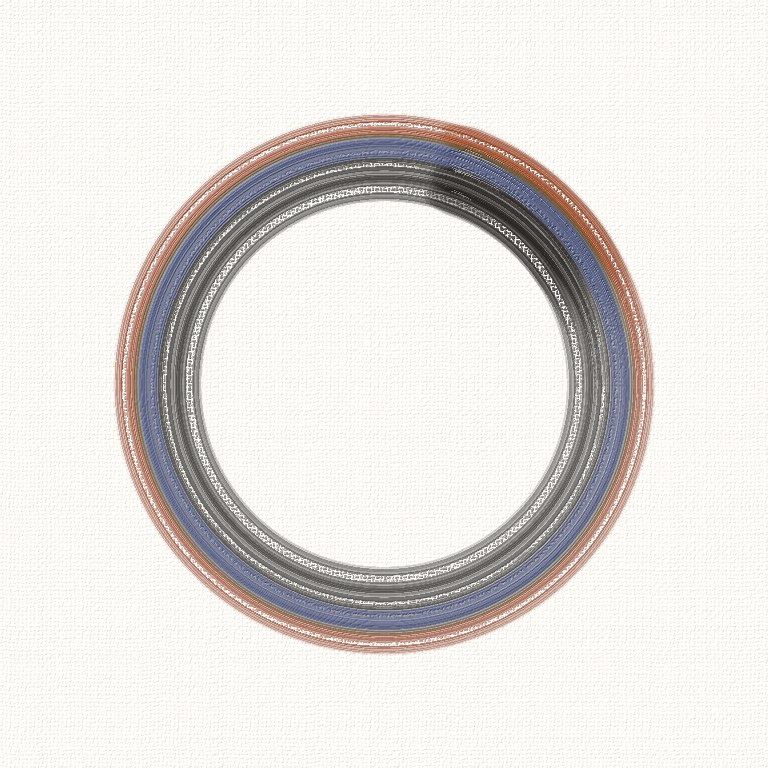
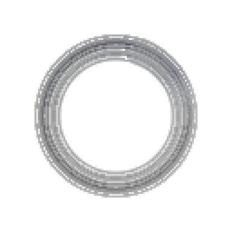
| Centroid | 1.65 (1.43–3.12) |
|---|---|
| Movement | 0.0052 |
| Shared, a semitone | 0.93 |
| Shared, a fifth | 0.58 |
| Glow / Motion / Memory | 0.46 / 0.38 / 0.26 |
| Covered (p90) | 16% |
| Brush, median | 5.7 cells |
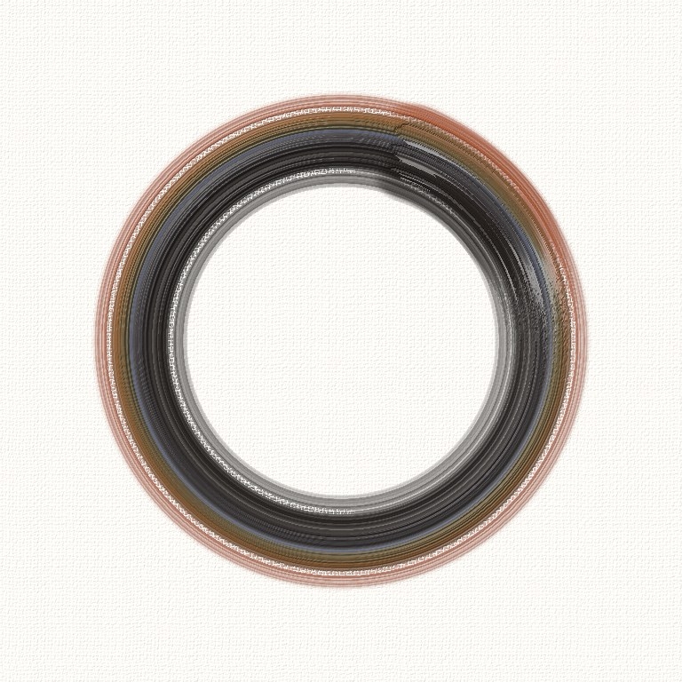
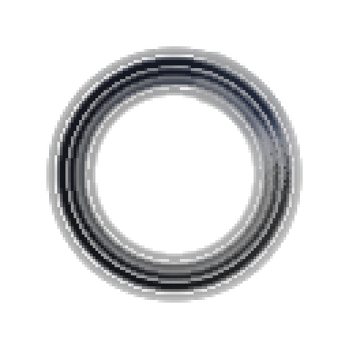
| Centroid | 1.54 (1.36–2.66) |
|---|---|
| Movement | 0.0046 |
| Shared, a semitone | 0.82 |
| Shared, a fifth | 0.48 |
| Glow / Motion / Memory | 0.56 / 0.56 / 0.36 |
| Covered (p90) | 22% |
| Brush, median | 10.0 cells |
Crossed hands
The owner's setup, Picture amount 47: left-hand chords under a right-hand run that quickens, then two grace notes.
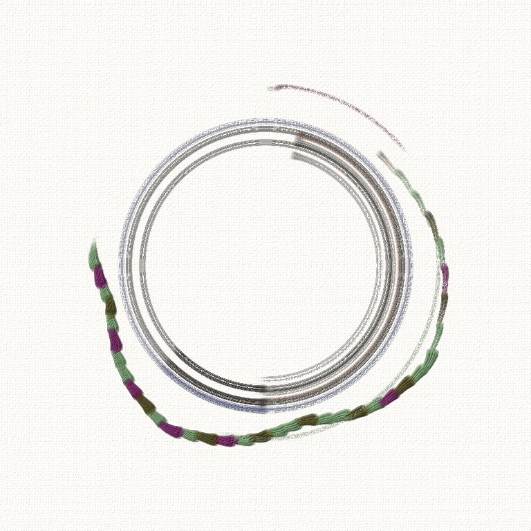
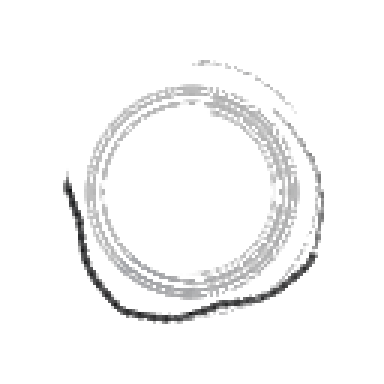
| Centroid | 2.10 (1.47–3.61) |
|---|---|
| Movement | 0.0051 |
| Shared, a semitone | 0.72 |
| Shared, a fifth | 0.06 |
| Glow / Motion / Memory | 0.21 / 0.15 / 0.00 |
| Covered (p90) | 7% |
| Brush, median | 2.5 cells |
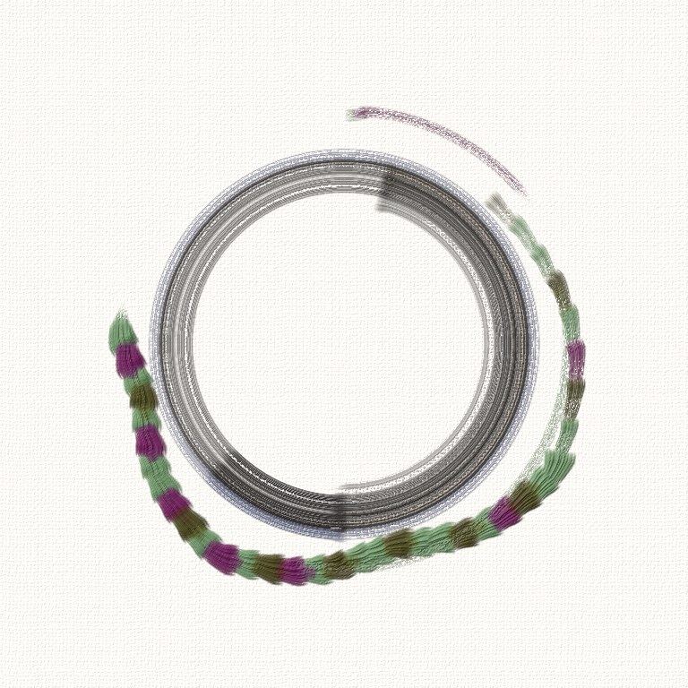
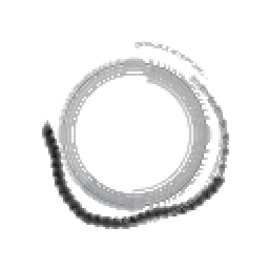
| Centroid | 2.12 (1.45–3.25) |
|---|---|
| Movement | 0.0052 |
| Shared, a semitone | 0.82 |
| Shared, a fifth | 0.22 |
| Glow / Motion / Memory | 0.31 / 0.14 / 0.09 |
| Covered (p90) | 12% |
| Brush, median | 5.1 cells |
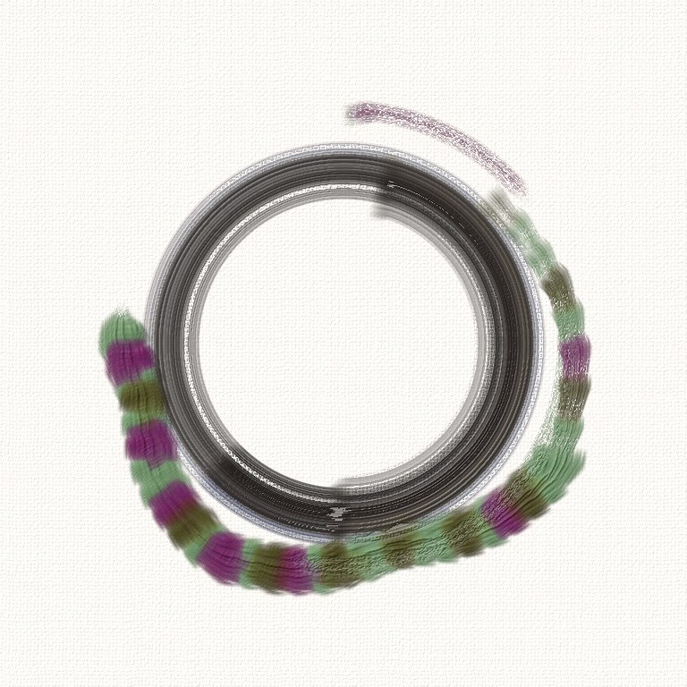
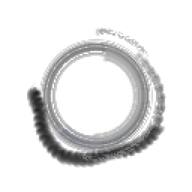
| Centroid | 1.68 (1.30–3.01) |
|---|---|
| Movement | 0.0043 |
| Shared, a semitone | 0.90 |
| Shared, a fifth | 0.46 |
| Glow / Motion / Memory | 0.39 / 0.16 / 0.24 |
| Covered (p90) | 18% |
| Brush, median | 8.9 cells |
Fast run
Tine piano, Picture amount 0, so Scan alone: C4 to C5 and back three times at nine notes a second.
| Centroid | 3.22 (2.40–3.85) |
|---|---|
| Movement | 0.0039 |
| Shared, a semitone | 0.71 |
| Shared, a fifth | 0.06 |
| Glow / Motion / Memory | 0.39 / 0.68 / 0.00 |
| Covered (p90) | 3% |
| Brush, median | 3.0 cells |
| Centroid | 2.66 (1.63–3.49) |
|---|---|
| Movement | 0.0047 |
| Shared, a semitone | 0.84 |
| Shared, a fifth | 0.22 |
| Glow / Motion / Memory | 0.55 / 0.68 / 0.00 |
| Covered (p90) | 6% |
| Brush, median | 6.0 cells |
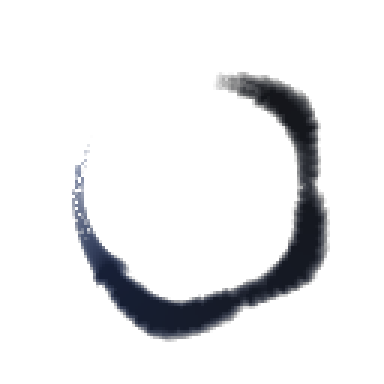
| Centroid | 1.89 (1.38–3.25) |
|---|---|
| Movement | 0.0044 |
| Shared, a semitone | 0.94 |
| Shared, a fifth | 0.57 |
| Glow / Motion / Memory | 0.67 / 0.69 / 0.00 |
| Covered (p90) | 11% |
| Brush, median | 10.6 cells |
Chord change
Drawbar organ, Picture amount 0: Dm7 G7 Cmaj7 Am7, 2.5 s each.
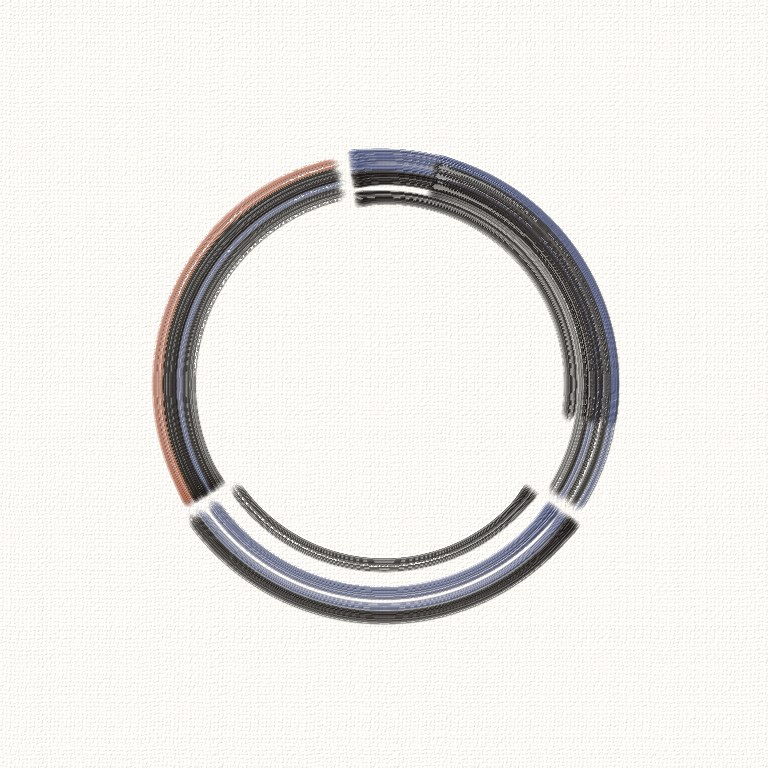
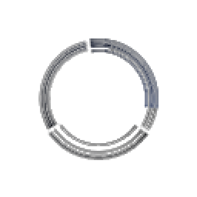
| Centroid | 1.89 (1.46–2.84) |
|---|---|
| Movement | 0.0051 |
| Shared, a semitone | 0.85 |
| Shared, a fifth | 0.33 |
| Glow / Motion / Memory | 0.39 / 0.52 / 0.16 |
| Covered (p90) | 9% |
| Brush, median | 3.1 cells |
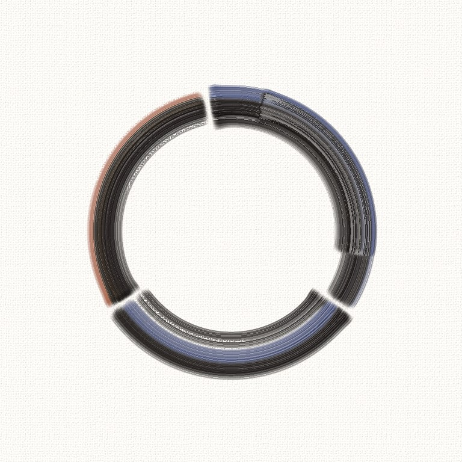
| Centroid | 1.80 (1.38–2.65) |
|---|---|
| Movement | 0.0049 |
| Shared, a semitone | 0.89 |
| Shared, a fifth | 0.38 |
| Glow / Motion / Memory | 0.49 / 0.56 / 0.32 |
| Covered (p90) | 14% |
| Brush, median | 6.3 cells |
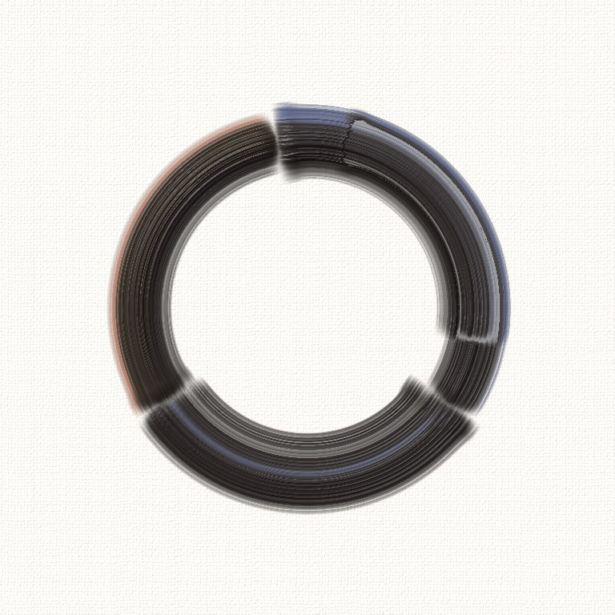
| Centroid | 1.63 (1.33–2.60) |
|---|---|
| Movement | 0.0042 |
| Shared, a semitone | 0.91 |
| Shared, a fifth | 0.47 |
| Glow / Motion / Memory | 0.57 / 0.75 / 0.38 |
| Covered (p90) | 19% |
| Brush, median | 11.0 cells |
What it costs, and what the map holds
The map stays 128 cells square. It holds every width here: a held note’s paint across its ring reads within 4% of the brush’s own width, and a cell’s own size is a twelfth of a cell squared on top. A wider brush needs less resolution, not more, so 256 was not needed. Cost doesn’t change measurably with width: the ring reads are most of painting’s cost, and they don’t depend on it.
| Native, trace (s a s) | Native, painting | WebAssembly, trace (ms a block) | WebAssembly, painting | Map spread (cells) | Brush’s own | |
|---|---|---|---|---|---|---|
| Today | 0.146 | 0.204 | 0.36 | 0.58 | 0.69 | 0.71 |
| Medium | 0.153 | 0.206 | 0.35 | 0.57 | 1.34 | 1.32 |
| Wide | 0.164 | 0.172 | 0.32 | 0.51 | 2.35 | 2.28 |
Native: a chord of sixteen held, seconds of one core a second, best of three. WebAssembly: the page’s own module in Chromium, a chord of eight, milliseconds a block of 128 (2.67 ms at 48 kHz), best of three. These are single runs on a shared machine, so differences of a few hundredths are noise.
Made by render.py (with render.cpp, the core playing the phrase),
cost.py and page.py, beside this page. Every number is in results.json. The
width is PaintParams::width, an internal parameter; testing still paints at today’s.